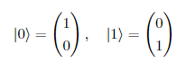
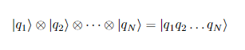
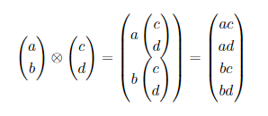
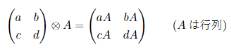

量子情報基礎
1.1.1 量子ビットを理解する
古典情報処理のビットを量子力学的に実装したものが量子ビット(quantum bit: キュービットとも言う)である．
ビットは0と1の2つの直行した状態をとる．ベクトルで表現すると
となる．2つのベクトルの内積は
となり，直行していることが確認できる．N個のビットがある場合，
と表現する．qiは0か1のどちらかをとる．
|a> ⊗ |b> は |a> と |b> のテンソル積を意味する．テンソル積とは，以下のような計算である．
行列の場合でも，同様に計算する．
課題
問題1 次の中から適切なものを選べ．
古典情報処理のビットを量子力学的に実装したものを何と言うか．